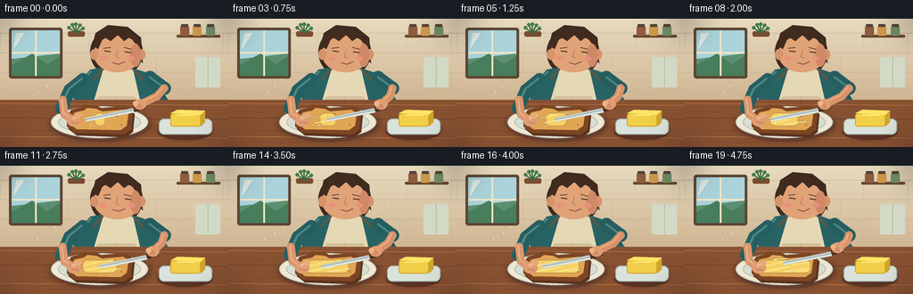
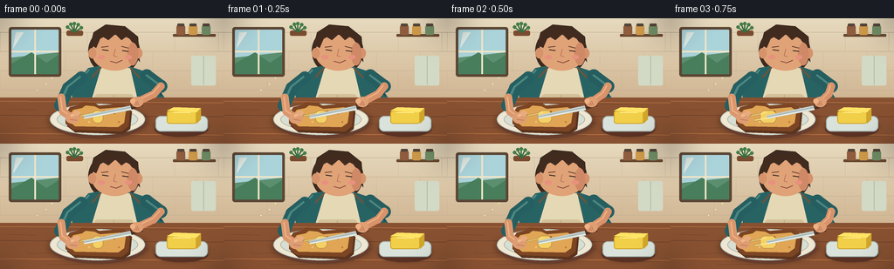

CODING AGENTS AS PIXEL WORLD MODELS
traex/GPT-5.6-Sol · motion_rationality_0004
点击播放 · 原生 RGB 像素
逐轮保存的候选
回放视频、检查图与代码变化。
每份候选均可单独播放。实际图片检查记录在下方工具轨迹中。
候选 01播放与检查图
点击播放 · 原生 RGB 像素


展开代码变化
--- 上一保存版本
+++ 本次保存版本
@@ -0,0 +1,236 @@
+from pathlib import Path
+import math
+import numpy as np
+from PIL import Image, ImageDraw, ImageFilter
+import artifact_io
+
+W, H, N = 256, 144, 20
+S = 4
+
+def P(points):
+ return [(int(x*S), int(y*S)) for x,y in points]
+
+def box(b):
+ return tuple(int(v*S) for v in b)
+
+def ellipse(d, b, fill, outline=None, width=1):
+ d.ellipse(box(b), fill=fill, outline=outline, width=max(1,int(width*S)))
+
+def polygon(d, pts, fill):
+ d.polygon(P(pts), fill=fill)
+
+def line(d, pts, fill, width=1, joint='curve'):
+ d.line(P(pts), fill=fill, width=max(1,int(width*S)), joint=joint)
+
+def rounded(d, b, radius, fill, outline=None, width=1):
+ d.rounded_rectangle(box(b), radius=int(radius*S), fill=fill, outline=outline,
+ width=max(1,int(width*S)))
+
+def shadow_ellipse(im, b, color=(45,24,15,75), blur=3):
+ layer=Image.new('RGBA', im.size, (0,0,0,0)); dl=ImageDraw.Draw(layer)
+ dl.ellipse(box(b), fill=color)
+ layer=layer.filter(ImageFilter.GaussianBlur(blur*S))
+ im.alpha_composite(layer)
+
+def thick_limb(d, pts, color, width, highlight=None):
+ line(d, pts, color, width)
+ for x,y in pts:
+ ellipse(d, (x-width/2,y-width/2,x+width/2,y+width/2), color)
+ if highlight:
+ # narrow soft-looking highlight along upper edge
+ shifted=[(x-0.8,y-1.2) for x,y in pts]
+ line(d, shifted, highlight, max(1,width*0.18))
+
+def render_frame(fi):
+ t=fi/(N-1)
+ # high-resolution warm wall gradient
+ yy=np.arange(H*S)[:,None]
+ top=np.array([231,218,190], dtype=float); bot=np.array([196,161,122], dtype=float)
+ a=(yy/(H*S-1))[:,:,None]
+ arr=np.tile((top*(1-a)+bot*a), (1,W*S,1)).astype(np.uint8)
+ im=Image.fromarray(arr,'RGB').convert('RGBA')
+ d=ImageDraw.Draw(im)
+
+ # backsplash tiles, deliberately subtle
+ for y in (16,38,60,82):
+ line(d, [(0,y),(256,y)], (194,177,149,110), .55)
+ for row,y in enumerate((16,38,60)):
+ offset=0 if row%2==0 else 25
+ for x in range(offset,257,50):
+ line(d, [(x,y),(x,y+22)], (194,177,149,85), .45)
+
+ # sunlit kitchen window
+ rounded(d,(10,10,70,67),3,(91,70,52,255))
+ rounded(d,(13,13,67,64),1,(170,211,218,255))
+ # sky gradient bands / distant greenery
+ polygon(d,[(13,45),(67,39),(67,64),(13,64)],(92,143,111,255))
+ polygon(d,[(13,52),(36,39),(53,51),(67,42),(67,64),(13,64)],(72,126,91,255))
+ line(d,[(40,13),(40,64)],(240,229,199,255),2)
+ line(d,[(13,38),(67,38)],(240,229,199,255),2)
+ # window glint
+ polygon(d,[(18,16),(27,16),(15,34)],(236,249,242,105))
+
+ # shelf and jars right
+ rounded(d,(198,18,247,21),1,(104,72,47,255))
+ for x,c in [(202,(143,92,62,255)),(216,(207,154,73,255)),(231,(112,143,102,255))]:
+ rounded(d,(x,8,x+10,19),2,c)
+ rounded(d,(x+1,6,x+9,9),1,(83,68,57,255))
+ # hanging towel and tiny plant
+ rounded(d,(219,43,247,77),2,(210,218,198,255))
+ line(d,[(233,43),(233,76)],(176,189,168,255),1)
+ rounded(d,(76,14,95,20),2,(122,76,47,255))
+ for ang in (-1.0,-.45,0,.55,1.1):
+ x=85+math.sin(ang)*9; y=15-math.cos(ang)*9
+ line(d,[(85,16),(x,y)],(55,108,65,255),1.5)
+ ellipse(d,(x-2,y-2,x+2,y+2),(69,125,73,255))
+
+ # person torso behind counter
+ # hair behind head
+ ellipse(d,(101,9,160,66),(62,42,31,255))
+ polygon(d,[(104,28),(107,16),(121,7),(143,9),(158,21),(160,50),(152,40),(111,45)],(62,42,31,255))
+ # neck
+ rounded(d,(123,48,143,68),6,(205,139,101,255))
+ # shoulders and teal shirt
+ polygon(d,[(101,57),(122,53),(145,54),(169,62),(189,92),(181,113),(84,112),(82,80)],(40,99,100,255))
+ line(d,[(102,59),(83,80)],(76,137,133,255),2)
+ line(d,[(165,62),(185,89)],(28,75,78,255),2)
+ # apron
+ polygon(d,[(116,56),(149,57),(162,113),(99,113)],(229,216,181,255))
+ line(d,[(116,56),(105,68)],(113,82,57,255),2)
+ line(d,[(149,57),(160,68)],(113,82,57,255),2)
+ rounded(d,(108,87,153,109),4,(211,193,155,255))
+ line(d,[(130,88),(130,108)],(188,169,132,255),1)
+
+ # face over hair, ears
+ ellipse(d,(105,19,158,60),(224,162,119,255))
+ ellipse(d,(101,34,110,46),(213,146,107,255)); ellipse(d,(154,34,163,46),(213,146,107,255))
+ # face warm shadow and cheek
+ ellipse(d,(146,28,158,54),(207,137,102,120))
+ ellipse(d,(112,42,120,47),(232,145,126,120)); ellipse(d,(143,42,151,47),(232,145,126,110))
+ # hair cap/fringe
+ polygon(d,[(105,31),(106,20),(116,11),(139,10),(154,20),(159,31),(151,27),(146,20),(139,25),(132,18),(124,25),(116,20),(110,34)],(65,43,31,255))
+ # brows, down-looking eyes
+ line(d,[(116,33),(124,32)],(78,49,37,255),1.2)
+ line(d,[(139,32),(147,34)],(78,49,37,255),1.2)
+ line(d,[(117,36),(124,37)],(55,45,39,255),1.3)
+ line(d,[(140,37),(147,38)],(55,45,39,255),1.3)
+ # nose / small smile
+ line(d,[(132,35),(130,43),(134,44)],(176,105,80,255),.8)
+ line(d,[(126,49),(133,51),(140,48)],(124,68,58,255),1.1)
+
+ # wooden counter foreground with rich gradient bands
+ polygon(d,[(0,91),(256,91),(256,144),(0,144)],(136,81,49,255))
+ for y,c in [(95,(177,112,66,255)),(111,(112,65,43,120)),(132,(188,118,68,120))]:
+ line(d,[(0,y),(256,y+2)],c,1)
+ # wood grain
+ for x,y,leng in [(8,104,33),(31,126,28),(172,98,35),(200,136,42),(152,120,18),(54,139,41)]:
+ line(d,[(x,y),(x+leng,y+math.sin(x)*1.2)],(100,57,40,100),.7)
+
+ # soft shadows for arms and dishes
+ shadow_ellipse(im,(55,100,170,137),(48,23,12,80),3)
+ shadow_ellipse(im,(176,112,239,136),(48,23,12,75),2)
+ d=ImageDraw.Draw(im)
+
+ # plate
+ ellipse(d,(58,101,167,138),(103,61,45,150))
+ ellipse(d,(57,98,166,134),(239,231,210,255),(184,198,190,255),1)
+ ellipse(d,(65,103,158,129),(216,222,209,255),(169,186,178,255),1)
+ # toast shadow and crust shape
+ toast=[(75,109),(80,102),(91,99),(94,96),(108,97),(113,100),(141,98),(149,104),(147,124),(139,130),(84,128),(75,121)]
+ polygon(d,[(x+2,y+3) for x,y in toast],(91,52,30,120))
+ polygon(d,toast,(124,69,35,255))
+ inner=[(80,110),(84,105),(94,103),(98,100),(108,101),(114,104),(138,102),(144,106),(142,120),(135,125),(86,124),(80,119)]
+ polygon(d,inner,(224,166,85,255))
+ # toast mottling
+ for x,y,r,c in [(91,111,1.4,(181,111,50,180)),(131,109,1.1,(177,107,48,180)),(102,119,1.2,(240,191,105,180)),(119,107,1,(171,101,44,160)),(136,119,1,(192,122,54,150))]:
+ ellipse(d,(x-r,y-r,x+r,y+r),c)
+
+ # butter spread accumulating: broad translucent base and individual knife ridges
+ spread_layer=Image.new('RGBA',im.size,(0,0,0,0)); sd=ImageDraw.Draw(spread_layer)
+ coverage=max(0.04,t)
+ # central patch grows toward both sides while staying on toast
+ cx=112; half=5+coverage*24
+ sd.rounded_rectangle(box((cx-half,106,cx+half,120)),radius=int(5*S),fill=(249,218,104,210))
+ # irregular butter highlights / ridges appear sequentially
+ ridges=[(91,112,110,108),(96,117,118,113),(105,108,128,105),(111,119,137,115),(119,111,141,108),(87,119,104,116),(126,119,140,117),(99,105,116,104)]
+ count=1+int(t*len(ridges))
+ for j,(x1,y1,x2,y2) in enumerate(ridges[:count]):
+ sd.line(P([(x1,y1),(x2,y2)]),fill=(255,237,145,220),width=max(1, int((1.5+(j%2)*.5)*S)))
+ spread_layer=spread_layer.filter(ImageFilter.GaussianBlur(.28*S))
+ im.alpha_composite(spread_layer)
+ d=ImageDraw.Draw(im)
+
+ # butter dish and pat, clearly visible
+ ellipse(d,(177,119,238,136),(91,50,36,110))
+ rounded(d,(178,112,238,130),6,(218,227,219,255),(158,176,173,255),1)
+ rounded(d,(191,106,225,121),3,(242,207,72,255),(207,164,43,255),1)
+ polygon(d,[(191,106),(199,102),(230,103),(225,108)],(255,228,101,255))
+ polygon(d,[(225,108),(230,103),(230,116),(225,121)],(209,166,43,255))
+ line(d,[(198,108),(218,108)],(255,239,145,255),1)
+
+ # left arm: stabilizes toast at its left edge
+ # sleeve first
+ thick_limb(d,[(93,68),(78,80),(69,100)],(38,95,97,255),14,(74,136,130,255))
+ # bare forearm
+ thick_limb(d,[(70,91),(72,107),(82,114)],(218,151,110,255),9,(239,180,134,255))
+ # left hand and gripping fingers
+ ellipse(d,(75,108,91,121),(222,157,114,255))
+ line(d,[(81,112),(88,109)],(241,183,140,255),3)
+ line(d,[(80,116),(88,117)],(187,118,88,255),1)
+ # thumb visibly rests on crust
+ ellipse(d,(84,106,92,112),(232,171,126,255))
+
+ # right arm motion. Hand and knife travel smoothly back-and-forth over bread.
+ sweep=(math.sin(2*math.pi*fi/8 - math.pi/2)+1)/2
+ xshift=17*sweep
+ lift=max(0,(t-.86)/.14)*4
+ wrist=(157+xshift,96-lift)
+ elbow=(184,78)
+ # sleeve and bent forearm
+ thick_limb(d,[(168,66),elbow],(38,94,96,255),15,(73,133,129,255))
+ thick_limb(d,[elbow,(176+xshift*.35,87-lift*.3),wrist],(216,147,107,255),9,(239,177,132,255))
+
+ # knife geometry: tip contacts butter, handle sits in moving right hand
+ tip=(96+xshift,113-lift)
+ junction=(150+xshift,102-lift)
+ vx=junction[0]-tip[0]; vy=junction[1]-tip[1]
+ ln=math.hypot(vx,vy); px=-vy/ln; py=vx/ln
+ blade=[(tip[0]+px*2.8,tip[1]+py*2.8),(tip[0]-px*1.5,tip[1]-py*1.5),
+ (junction[0]-px*2.0,junction[1]-py*2.0),(junction[0]+px*3.5,junction[1]+py*3.5)]
+ polygon(d,blade,(195,207,205,255))
+ line(d,[(tip[0]+px*1.6,tip[1]+py*1.6),(junction[0]+px*2.2,junction[1]+py*2.2)],(248,250,239,255),1)
+ line(d,[tip,junction],(112,125,124,255),.6)
+ # dark wooden handle from junction toward wrist
+ handle_end=(163+xshift,98-lift)
+ line(d,[junction,handle_end],(80,48,32,255),6)
+ line(d,[(junction[0]+1,junction[1]-1),(handle_end[0]+1,handle_end[1]-1)],(145,88,49,255),1.2)
+ # right hand wrapped around handle
+ ellipse(d,(wrist[0]-7,wrist[1]-6,wrist[0]+7,wrist[1]+6),(224,158,115,255))
+ for k in range(3):
+ line(d,[(wrist[0]-4+k*2,wrist[1]-1),(wrist[0]-2+k*2,wrist[1]+4)],(183,113,84,255),.8)
+ ellipse(d,(wrist[0]-8,wrist[1]-4,wrist[0]-2,wrist[1]+2),(239,178,133,255))
+
+ # subtle steam-like aroma/sun motes to bring scene alive (not from toast)
+ for k in range(3):
+ phase=t*2*math.pi+k*2
+ x=42+k*9+math.sin(phase)*1.2; y=82-k*7
+ ellipse(d,(x,y,x+1.2,y+1.2),(255,239,190,120))
+
+ # soft vignette for cinematic focus
+ vign=Image.new('L',im.size,0)
+ vd=ImageDraw.Draw(vign)
+ vd.ellipse(box((-20,-35,276,182)),fill=255)
+ vign=vign.filter(ImageFilter.GaussianBlur(18*S))
+ dark=Image.new('RGBA',im.size,(31,19,16,45))
+ inv=Image.eval(vign,lambda x:255-x)
+ # use a restrained edge darkening
+ edge=np.asarray(inv,dtype=np.uint8)
+ edge=(edge.astype(np.float32)*0.42).astype(np.uint8)
+ dark.putalpha(Image.fromarray(edge,'L'))
+ im.alpha_composite(dark)
+
+ return np.asarray(im.convert('RGB').resize((W,H),Image.Resampling.LANCZOS),dtype=np.uint8)
+
+frames=np.stack([render_frame(i) for i in range(N)],axis=0)
+artifact_io.save(frames,Path(__file__).resolve().parent)
+print('saved',frames.shape,frames.dtype)
可观测工具轨迹
实际执行的命令与返回图片。
命令 1exit 0
/bin/bash -lc "cat prompt.txt && printf '\\n---RULES---\\n' && cat GENERATION_RULES.md && printf '\\n---SPEC---\\n' && cat task_spec.json"
命令 2exit 0
/bin/bash -lc "find . -maxdepth 2 -type f -printf '%p\\n' | sort && printf '\\nTOOLS\\n' && command -v ffmpeg || true && command -v blender || true && command -v python3 || true"
命令 3exit 0
/bin/bash -lc 'cat artifact_io.py'
命令 4exit 0
/bin/bash -lc "cat > generate.py <<'PY'
from pathlib import Path
import math
import numpy as np
from PIL import Image, ImageDraw, ImageFilter
import artifact_io
W, H, N = 256, 144, 20
S = 4
def P(points):
return [(int(x*S), int(y*S)) for x,y in points]
def box(b):
return tuple(int(v*S) for v in b)
def ellipse(d, b, fill, outline=None, width=1):
d.ellipse(box(b), fill=fill, outline=outline, width=max(1,int(width*S)))
def polygon(d, pts, fill):
d.polygon(P(pts), fill=fill)
def line(d, pts, fill, width=1, joint='curve'):
d.line(P(pts), fill=fill, width=max(1,int(width*S)), joint=joint)
def rounded(d, b, radius, fill, outline=None, width=1):
d.rounded_rectangle(box(b), radius=int(radius*S), fill=fill, outline=outline,
width=max(1,int(width*S)))
def shadow_ellipse(im, b, color=(45,24,15,75), blur=3):
layer=Image.new('RGBA', im.size, (0,0,0,0)); dl=ImageDraw.Draw(layer)
dl.ellipse(box(b), fill=color)
layer=layer.filter(ImageFilter.GaussianBlur(blur*S))
im.alpha_composite(layer)
def thick_limb(d, pts, color, width, highlight=None):
line(d, pts, color, width)
for x,y in pts:
ellipse(d, (x-width/2,y-width/2,x+width/2,y+width/2), color)
if highlight:
# narrow soft-looking highlight along upper edge
shifted=[(x-0.8,y-1.2) for x,y in pts]
line(d, shifted, highlight, max(1,width*0.18))
def render_frame(fi):
t=fi/(N-1)
# high-resolution warm wall gradient
yy=np.arange(H*S)[:,None]
top=np.array([231,218,190], dtype=float); bot=np.array([196,161,122], dtype=float)
a=(yy/(H*S-1))[:,:,None]
arr=np.tile((top*(1-a)+bot*a), (1,W*S,1)).astype(np.uint8)
im=Image.fromarray(arr,'RGB').convert('RGBA')
d=ImageDraw.Draw(im)
# backsplash tiles, deliberately subtle
for y in (16,38,60,82):
line(d, [(0,y),(256,y)], (194,177,149,110), .55)
for row,y in enumerate((16,38,60)):
offset=0 if row%2==0 else 25
for x in range(offset,257,50):
line(d, [(x,y),(x,y+22)], (194,177,149,85), .45)
# sunlit kitchen window
rounded(d,(10,10,70,67),3,(91,70,52,255))
rounded(d,(13,13,67,64),1,(170,211,218,255))
# sky gradient bands / distant greenery
polygon(d,[(13,45),(67,39),(67,64),(13,64)],(92,143,111,255))
polygon(d,[(13,52),(36,39),(53,51),(67,42),(67,64),(13,64)],(72,126,91,255))
line(d,[(40,13),(40,64)],(240,229,199,255),2)
line(d,[(13,38),(67,38)],(240,229,199,255),2)
# window glint
polygon(d,[(18,16),(27,16),(15,34)],(236,249,242,105))
# shelf and jars right
rounded(d,(198,18,247,21),1,(104,72,47,255))
for x,c in [(202,(143,92,62,255)),(216,(207,154,73,255)),(231,(112,143,102,255))]:
rounded(d,(x,8,x+10,19),2,c)
rounded(d,(x+1,6,x+9,9),1,(83,68,57,255))
# hanging towel and tiny plant
rounded(d,(219,43,247,77),2,(210,218,198,255))
line(d,[(233,43),(233,76)],(176,189,168,255),1)
rounded(d,(76,14,95,20),2,(122,76,47,255))
for ang in (-1.0,-.45,0,.55,1.1):
x=85+math.sin(ang)*9; y=15-math.cos(ang)*9
line(d,[(85,16),(x,y)],(55,108,65,255),1.5)
ellipse(d,(x-2,y-2,x+2,y+2),(69,125,73,255))
# person torso behind counter
# hair behind head
ellipse(d,(101,9,160,66),(62,42,31,255))
polygon(d,[(104,28),(107,16),(121,7),(143,9),(158,21),(160,50),(152,40),(111,45)],(62,42,31,255))
# neck
rounded(d,(123,48,143,68),6,(205,139,101,255))
# shoulders and teal shirt
polygon(d,[(101,57),(122,53),(145,54),(169,62),(189,92),(181,113),(84,112),(82,80)],(40,99,100,255))
line(d,[(102,59),(83,80)],(76,137,133,255),2)
line(d,[(165,62),(185,89)],(28,75,78,255),2)
# apron
polygon(d,[(116,56),(149,57),(162,113),(99,113)],(229,216,181,255))
line(d,[(116,56),(105,68)],(113,82,57,255),2)
line(d,[(149,57),(160,68)],(113,82,57,255),2)
rounded(d,(108,87,153,109),4,(211,193,155,255))
line(d,[(130,88),(130,108)],(188,169,132,255),1)
# face over hair, ears
ellipse(d,(105,19,158,60),(224,162,119,255))
ellipse(d,(101,34,110,46),(213,146,107,255)); ellipse(d,(154,34,163,46),(213,146,107,255))
# face warm shadow and cheek
ellipse(d,(146,28,158,54),(207,137,102,120))
ellipse(d,(112,42,120,47),(232,145,126,120)); ellipse(d,(143,42,151,47),(232,145,126,110))
# hair cap/fringe
polygon(d,[(105,31),(106,20),(116,11),(139,10),(154,20),(159,31),(151,27),(146,20),(139,25),(132,18),(124,25),(116,20),(110,34)],(65,43,31,255))
# brows, down-looking eyes
line(d,[(116,33),(124,32)],(78,49,37,255),1.2)
line(d,[(139,32),(147,34)],(78,49,37,255),1.2)
line(d,[(117,36),(124,37)],(55,45,39,255),1.3)
line(d,[(140,37),(147,38)],(55,45,39,255),1.3)
# nose / small smile
line(d,[(132,35),(130,43),(134,44)],(176,105,80,255),.8)
line(d,[(126,49),(133,51),(140,48)],(124,68,58,255),1.1)
# wooden counter foreground with rich gradient bands
polygon(d,[(0,91),(256,91),(256,144),(0,144)],(136,81,49,255))
for y,c in [(95,(177,112,66,255)),(111,(112,65,43,120)),(132,(188,118,68,120))]:
line(d,[(0,y),(256,y+2)],c,1)
# wood grain
for x,y,leng in [(8,104,33),(31,126,28),(172,98,35),(200,136,42),(152,120,18),(54,139,41)]:
line(d,[(x,y),(x+leng,y+math.sin(x)*1.2)],(100,57,40,100),.7)
# soft shadows for arms and dishes
shadow_ellipse(im,(55,100,170,137),(48,23,12,80),3)
shadow_ellipse(im,(176,112,239,136),(48,23,12,75),2)
d=ImageDraw.Draw(im)
# plate
ellipse(d,(58,101,167,138),(103,61,45,150))
ellipse(d,(57,98,166,134),(239,231,210,255),(184,198,190,255),1)
ellipse(d,(65,103,158,129),(216,222,209,255),(169,186,178,255),1)
# toast shadow and crust shape
toast=[(75,109),(80,102),(91,99),(94,96),(108,97),(113,100),(141,98),(149,104),(147,124),(139,130),(84,128),(75,121)]
polygon(d,[(x+2,y+3) for x,y in toast],(91,52,30,120))
polygon(d,toast,(124,69,35,255))
inner=[(80,110),(84,105),(94,103),(98,100),(108,101),(114,104),(138,102),(144,106),(142,120),(135,125),(86,124),(80,119)]
polygon(d,inner,(224,166,85,255))
# toast mottling
for x,y,r,c in [(91,111,1.4,(181,111,50,180)),(131,109,1.1,(177,107,48,180)),(102,119,1.2,(240,191,105,180)),(119,107,1,(171,101,44,160)),(136,119,1,(192,122,54,150))]:
ellipse(d,(x-r,y-r,x+r,y+r),c)
# butter spread accumulating: broad translucent base and individual knife ridges
spread_layer=Image.new('RGBA',im.size,(0,0,0,0)); sd=ImageDraw.Draw(spread_layer)
coverage=max(0.04,t)
# central patch grows toward both sides while staying on toast
cx=112; half=5+coverage*24
sd.rounded_rectangle(box((cx-half,106,cx+half,120)),radius=int(5*S),fill=(249,218,104,210))
# irregular butter highlights / ridges appear sequentially
ridges=[(91,112,110,108),(96,117,118,113),(105,108,128,105),(111,119,137,115),(119,111,141,108),(87,119,104,116),(126,119,140,117),(99,105,116,104)]
count=1+int(t*len(ridges))
for j,(x1,y1,x2,y2) in enumerate(ridges[:count]):
sd.line(P([(x1,y1),(x2,y2)]),fill=(255,237,145,220),width=max(1, int((1.5+(j%2)*.5)*S)))
spread_layer=spread_layer.filter(ImageFilter.GaussianBlur(.28*S))
im.alpha_composite(spread_layer)
d=ImageDraw.Draw(im)
# butter dish and pat, clearly visible
ellipse(d,(177,119,238,136),(91,50,36,110))
rounded(d,(178,112,238,130),6,(218,227,219,255),(158,176,173,255),1)
rounded(d,(191,106,225,121),3,(242,207,72,255),(207,164,43,255),1)
polygon(d,[(191,106),(199,102),(230,103),(225,108)],(255,228,101,255))
polygon(d,[(225,108),(230,103),(230,116),(225,121)],(209,166,43,255))
line(d,[(198,108),(218,108)],(255,239,145,255),1)
# left arm: stabilizes toast at its left edge
# sleeve first
thick_limb(d,[(93,68),(78,80),(69,100)],(38,95,97,255),14,(74,136,130,255))
# bare forearm
thick_limb(d,[(70,91),(72,107),(82,114)],(218,151,110,255),9,(239,180,134,255))
# left hand and gripping fingers
ellipse(d,(75,108,91,121),(222,157,114,255))
line(d,[(81,112),(88,109)],(241,183,140,255),3)
line(d,[(80,116),(88,117)],(187,118,88,255),1)
# thumb visibly rests on crust
ellipse(d,(84,106,92,112),(232,171,126,255))
# right arm motion. Hand and knife travel smoothly back-and-forth over bread.
sweep=(math.sin(2*math.pi*fi/8 - math.pi/2)+1)/2
xshift=17*sweep
lift=max(0,(t-.86)/.14)*4
wrist=(157+xshift,96-lift)
elbow=(184,78)
# sleeve and bent forearm
thick_limb(d,[(168,66),elbow],(38,94,96,255),15,(73,133,129,255))
thick_limb(d,[elbow,(176+xshift*.35,87-lift*.3),wrist],(216,147,107,255),9,(239,177,132,255))
# knife geometry: tip contacts butter, handle sits in moving right hand
tip=(96+xshift,113-lift)
junction=(150+xshift,102-lift)
vx=junction[0]-tip[0]; vy=junction[1]-tip[1]
ln=math.hypot(vx,vy); px=-vy/ln; py=vx/ln
blade=[(tip[0]+px*2.8,tip[1]+py*2.8),(tip[0]-px*1.5,tip[1]-py*1.5),
(junction[0]-px*2.0,junction[1]-py*2.0),(junction[0]+px*3.5,junction[1]+py*3.5)]
polygon(d,blade,(195,207,205,255))
line(d,[(tip[0]+px*1.6,tip[1]+py*1.6),(junction[0]+px*2.2,junction[1]+py*2.2)],(248,250,239,255),1)
line(d,[tip,junction],(112,125,124,255),.6)
# dark wooden handle from junction toward wrist
handle_end=(163+xshift,98-lift)
line(d,[junction,handle_end],(80,48,32,255),6)
line(d,[(junction[0]+1,junction[1]-1),(handle_end[0]+1,handle_end[1]-1)],(145,88,49,255),1.2)
# right hand wrapped around handle
ellipse(d,(wrist[0]-7,wrist[1]-6,wrist[0]+7,wrist[1]+6),(224,158,115,255))
for k in range(3):
line(d,[(wrist[0]-4+k*2,wrist[1]-1),(wrist[0]-2+k*2,wrist[1]+4)],(183,113,84,255),.8)
ellipse(d,(wrist[0]-8,wrist[1]-4,wrist[0]-2,wrist[1]+2),(239,178,133,255))
# subtle steam-like aroma/sun motes to bring scene alive (not from toast)
for k in range(3):
phase=t*2*math.pi+k*2
x=42+k*9+math.sin(phase)*1.2; y=82-k*7
ellipse(d,(x,y,x+1.2,y+1.2),(255,239,190,120))
# soft vignette for cinematic focus
vign=Image.new('L',im.size,0)
vd=ImageDraw.Draw(vign)
vd.ellipse(box((-20,-35,276,182)),fill=255)
vign=vign.filter(ImageFilter.GaussianBlur(18*S))
dark=Image.new('RGBA',im.size,(31,19,16,45))
inv=Image.eval(vign,lambda x:255-x)
# use a restrained edge darkening
edge=np.asarray(inv,dtype=np.uint8)
edge=(edge.astype(np.float32)*0.42).astype(np.uint8)
dark.putalpha(Image.fromarray(edge,'L'))
im.alpha_composite(dark)
return np.asarray(im.convert('RGB').resize((W,H),Image.Resampling.LANCZOS),dtype=np.uint8)
frames=np.stack([render_frame(i) for i in range(N)],axis=0)
artifact_io.save(frames,Path(__file__).resolve().parent)
print('saved',frames.shape,frames.dtype)
PY
python3 generate.py
ls -lh pixels.npz index.html inspection.png frames/00.png frames/19.png"命令 5exit 0
/bin/bash -lc "python3 - <<'PY'
import numpy as np
from PIL import Image
z=np.load('pixels.npz')['pixels']
assert z.shape==(144,256,20)
assert all(Image.open(f'frames/{i:02d}.png').mode=='RGB' and Image.open(f'frames/{i:02d}.png').size==(256,144) for i in range(20))
# frame-to-frame changed pixel counts and average color differences
f=np.stack([np.asarray(Image.open(f'frames/{i:02d}.png'),dtype=np.int16) for i in range(20)])
changed=np.count_nonzero(np.any(f[1:]"'!=f[:-1],axis=3),axis=(1,2))
mad=np.abs(f[1:]-f[:-1]).mean(axis=(1,2,3))
print('"'shape:',f.shape,'modes: RGB')
print('changed pixels:',changed.tolist())
print('mean abs deltas:',np.round(mad,2).tolist())
print('range:',int(f.min()),int(f.max()),'unique frame sums:',len(set(map(int,f.sum(axis=(1,2,3))))))
PY"保存候选 1 份；完成命令 5 次；可验证图片返回 0 张。原始 API 响应与完整日志保留在本地。